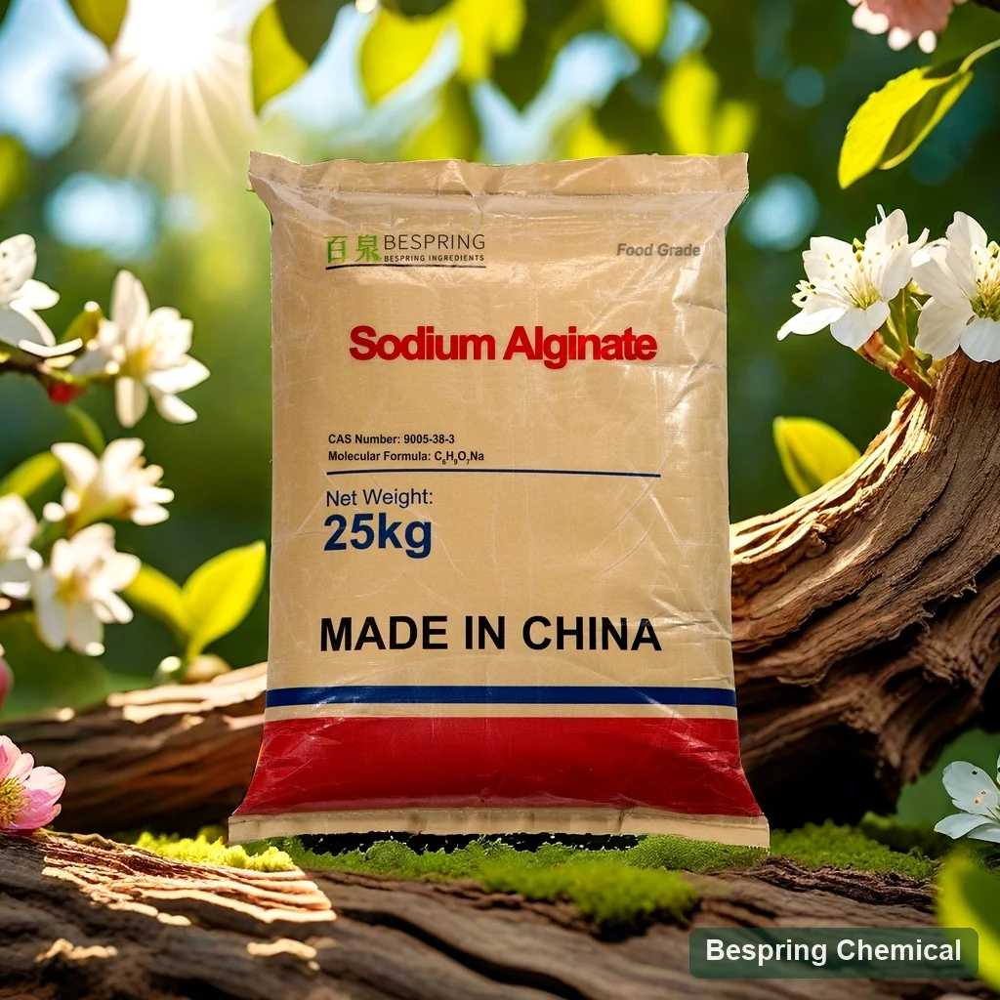
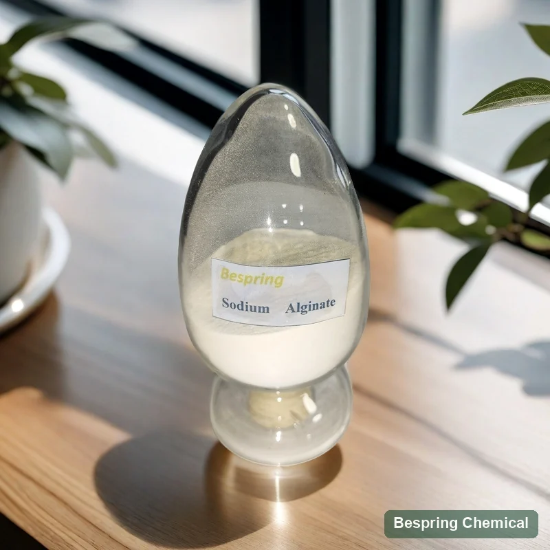
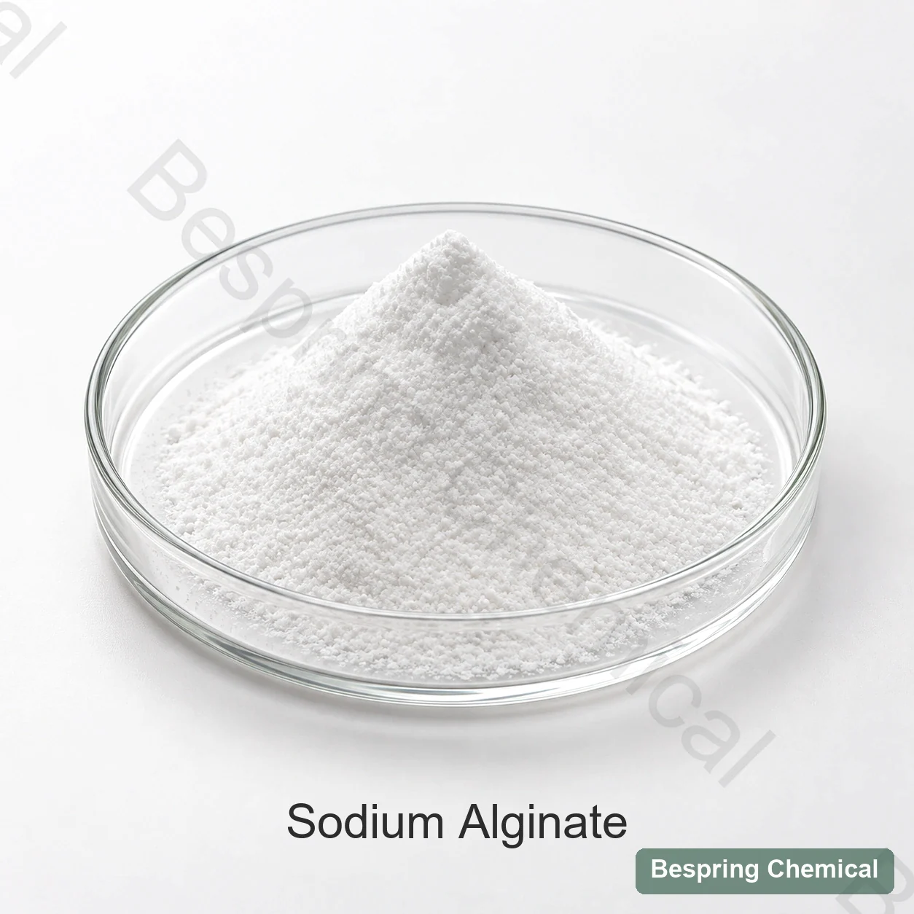
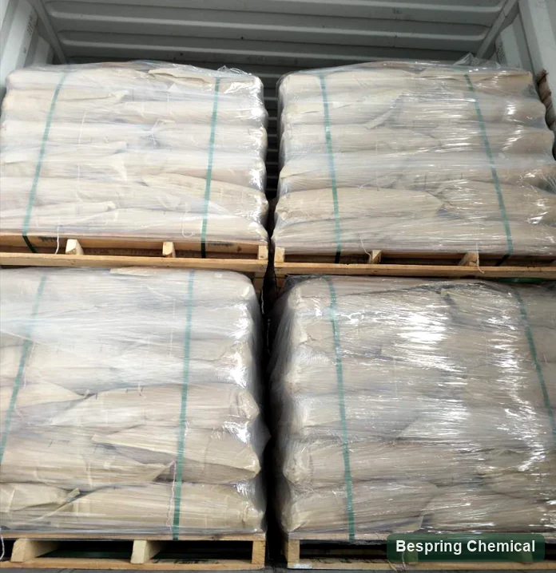

Phân phối hạt
Vệ tinh bột nhanh nhưng có thể tạo ra mắt cá; phân số thô chậm toàn bộ độ cao. Chỉ định một hồ sơ lọc, không phải một mình lưới.
Cây thủy tùng nâu · E401 / INS 401
Natri cấp thực phẩm alginate (E401 / INS 401) là một hydrocolloid màu nâu- thủy tinh được dùng để dày đặc, ổn định và hình thành gel với can- xi trong cấu trúc thức ăn thích hợp. Bespring cung cấp Natri alginate cho các nguồn cấp đặc trưng đặc trưng cấp cấp. Đối với một dấu ngoặc tương tự, xác định các điều kiện thử nghiệm độ tương tự, kích cỡ hạt và hiệu suất dày hoặc gel.

Ảnh sản xuất # xác nhận cấp và bao bì khi đặt thứ tự
* Chỉ tham chiếu thương mại thôi. Hãy xác nhận điểm số, số lượng hiện tại, tiêu đề và điểm đến trước khi đặt hàng.
Nước chảy chậmSự phân tán trước độ đàn ông
gel biểu tượngĐiều khiển giao ca- tan
CommentKết cấu Gel có thể khác
So sánh phương phápKhớp điều kiện thử ra
Bộ phân tích tự nhiên biến
Sodium alginate là muối Natri của axit alginic, một polysaccharide tuyến tính chứa mennuronate (M) và gluronate (G) trong các chuỗi khác nhau. Đặc tả về Natri JECFA Xác định CAS 9005-38-3, INS 401 và công thức đơn vị lặp đi lặp lại (C)6H7NaO6)nNó liệt kê các chức năng như ổn định, dày đặc, mềm dẻo và phân bón.
Đây là polyme có phân bố khối lượng phân tử, không phải chất có một khối lượng phân tử cố định hoặc một dạng hydrat xác định duy nhất. Lựa chọn cấp phụ thuộc vào đặc tính dung dịch, thành phần và trình tự M/G, phân bố hạt và hệ thực phẩm. Natri alginat tinh khiết, canxi alginat và hỗn hợp alginat phối chế có danh tính khác nhau và không được coi là nguồn cung tương đương. Cấp thực phẩm phải được xác nhận độc lập với cấp công nghiệp hoặc dược phẩm.
Thủy lực mà không có khối u
Vệ tinh bột nhanh nhưng có thể tạo ra mắt cá; phân số thô chậm toàn bộ độ cao. Chỉ định một hồ sơ lọc, không phải một mình lưới.
Canxi có thể gây tạo màng hoặc hạt gel sớm. Độ cứng, pH, muối và chất tạo phức phải tương ứng với nước sản xuất.
Kết hợp với mẫu tương thích hoặc sử dụng khả năng làm ướt. Tốc độ bổ sung thu, hình học trộn, tốc độ và giữ nước.
Sự tập trung của các tiểu bang, sự khô ráo, nước, nhiệt độ, nước, dụng cụ, trục chính, đường cong tốc độ hay tốc độ kéo.
Thiết kế Canxi có sẵn theo thời gian
Truyền nhiễm Canxi từ bên trong theo dõi hình dạng da, bộ phận lõi, nồng độ eon, thời gian tắm rửa và kích thước phụ thuộc.
Một nguồn can-xi có thể tiết kiệm được cộng với axit hóa được kiểm soát có thể phân phối canxi đồng đều hơn.
M/G có nghĩa là tỷ lệ giữa manduronate với guluronate. Nội dung và chuỗi khối ảnh hưởng ngang Canxi, cùng với trọng lượng phân tử và chuẩn bị gel. Yêu cầu dữ liệu cấu hình sẵn sàng hoặc so sánh một thử gel có khả năng tái sử dụng; chỉ một nhãn vscosity không chỉ ghi rõ gel.
Cung cấp Calcium, hợp chất và gel có thể ảnh hưởng đến co thắt và nước giải phóng. Đánh giá kết cấu và kết cấu kết hợp sau chu trình nóng, đóng băng và lưu trữ; không có kết quả cố định hoặc kệ xác được ngụ ý.
Chấp nhận đặc trưng cho ứng dụng
Hệ tạo đông bằng canxi có thể kết dính hoặc tạo cấu trúc thực phẩm định hình phù hợp. Đồng bộ thời gian đông với tạo hình; đánh giá độ dai, gãy, hao khi nấu và thoát nước trong quy trình thực.
Đối với thức ăn được tinh luyện hoặc sự kết hợp, hãy chọn tuyến đường xung quanh can-xi và đánh giá kích thước giọt nước, độ dày màng, sự lưu trữ cốt lõi, bồn tắm và sự toàn vẹn của kho.
Tách một mục tiêu độ béo phì ra khỏi một mục tiêu có chứa Canxi. cắt hoặc di cư nước trong nước sốt thực tế, làm đầy hoặc lên.
Khi phân loại thức ăn và công thức hỗ trợ nó sử dụng, đánh giá sự phân tán, lưu thông và đình chỉ. thức uống có cồn hoặc can-xi cần thử nghiệm đặc biệt thích hợp; Natri alginate không có khả năng trao đổi với prolyne glycol alginate.
Giới hạn quy định: Chứng minh thư điện tử không cho phép mọi thức ăn hay mức độ sử dụng. Xác nhận phân loại thực phẩm, chức năng, giới hạn và nhãn hiệu trong mỗi đích. Cổ bản Kinh Thánh INS 401 cung cấp Và áp dụng luật địa phương. 21 CFR 184.1724 Xác định phân loại thức ăn, chức năng và giới hạn sử dụng; đó không phải là một sự khuyến khích liều lượng phổ biến.
Comment
Những tài liệu tham khảo sau đây hỗ trợ việc chọn lớp. Hãy chọn một phương pháp đặc trưng và thử nghiệm đầy đủ cho điểm được đề nghị, rồi so sánh với điểm COA hàng loạt của nó. Các phạm vi không xác định một lớp và không xác định tính phù hợp với JECFA.
Trên màn hình nhỏ, hãy lật bảng để đọc các giá trị tham khảo và yêu cầu xác nhận.
Vuốt hoặc dùng bàn phím để đọc tất cả các cột
| Tìm kiếm | Tham chiếu thương mại* | Xác nhận trước khi phê chuẩn |
|---|---|---|
| Diện mạo | Bột trắng | Trong lời miêu tả rộng hơn của JECFA; thêm màu số nếu cần thiết |
| Độ đa dạng | 50–1,200 mP·s hay yêu cầu khách hàng | Không có phương pháp: tập trung, nước, nhiệt độ, nước, dụng cụ và kéo cắt |
| Đá | 40–200 mesh hay yêu cầu khách hàng | Nhà nước đang tăng cường chuẩn và giữ lại/bỏ qua toàn bộ bản phân phối |
| Sức mạnh Gel | 500–1,000 g/cm² hoặc theo yêu cầu khách hàng | Không có phương pháp: hệ thống alginate/calcium, hình học, đặt thời gian và thiết lập thử |
| pH | 6–8 | Tỷ lệ giải pháp tiểu bang, nước và nhiệt độ |
| Mất mát trên khô | ≤15%; 105°C / 4 h | Cùng một giới hạn và điều kiện như được viện dẫn JECFA; kiểm tra phương pháp và kết quả mẻ |
| Ash | 18–27% | Làm sáng tỏ tổng số tro chống lại tro và phương pháp làm đông |
| chì/ thạch tín | ≤5 / ≤3 ppm | 5 / 3 ppm bởi khối lượng = 5 / 3 mg/kg, khớp các giá trị được trích dẫn JECFA; xác minh giới hạn thị trường và thử nghiệm yếu tố cụ thể |
| “ Những kim loại nặng như PbGE | ≤20 ppm | Thử ra di sản; yêu cầu bảng rủi ro đặc trưng yếu tố phần tử |
| Vi sinh học | TPC ≤1,000; nấm men/nấm mốc ≤100 CFU/g; không có E. coli và Salmonella trong 25 g | TPC và men/mould là thấp hơn được viện dẫn bởi JECFA; phương pháp và sinh vật/các tiêu chuẩn không giống hệt nhau |
| Thương mại | 25 kg; MOQ 500 kg; 18 MT không pallet / 15 MT có pallet mỗi 20GP | Xác nhận lớp, dòng, mẫu pallet, đề nghị hiện tại và tải thực tế |
Khoảng độ nhớt và độ bền gel cần phương pháp đầy đủ. Xác nhận nồng độ, cơ sở khối lượng, chất lượng nước, nhiệt độ, thời gian hydrat hóa, thiết bị và cài đặt lực cắt. Với độ bền gel, nêu thêm nguồn và mức canxi, hình học, thời gian tạo gel và điều kiện đo. Ký hiệu g/cm² cũ cần quy ước lực/diện tích đã thỏa thuận; không thể thay trực tiếp bằng lực xuyên hay kết quả cấu trúc khác.
Bằng chứng tiêu chuẩn và hàng loạt: chuyên khảo JECFA được dẫn dùng phép định lượng cacbon dioxit trên cơ sở sau sấy và quy định riêng chất không tan trong nước; bảng thương mại không báo cáo cả hai. Yêu cầu các phép thử liên quan thay vì giả định sự phù hợp. Mức TPC và nấm men/nấm mốc tối đa lần lượt là 5,000 và 500 mỗi gram, còn tham khảo thương mại là 1,000 và 100. Tiêu chí coliform và Salmonella cũng cần xem phương pháp, cỡ mẫu. “Kim loại nặng tính theo Pb” không xác lập kết quả riêng cho chì, cadimi, thủy ngân hoặc nguyên tố khác.
Tài liệu và nguồn cung cấp: yêu cầu cấp độ TDS/ cụ thể, SDS, đại diện COA và COA, thêm vào nguồn cần thiết, các tài liệu chứng nhận có sẵn và ứng dụng. Cần phải xác nhận phạm vi chứng nhận và chứng nhận. Khoảng 25 kg, 500 kg MOQ và 20GP tải dữ liệu tham khảo thương mại, chủ đề đối với kế hoạch thực sự và đóng gói. Xác nhận hướng dẫn lưu trữ và kệ sách từ tài liệu hướng dẫn chấm cần phải được xác định cho lớp.
Nhân dạng, mô tả chất lượng, sử dụng chức năng và phương pháp tinh khiết.
Xem lại chữ viết của JECFACác loại thức ăn, chức năng, giới hạn và ghi chú hiện nay.
Xem lại thiết bị INS 401Bằng chứng cho thấy giải pháp cho rheology không chỉ thiết lập hiệu suất canxi-gel.
Xem xét lại nghiên cứu mở khungChọn theo cơ chế
Nhiễm sắc thể lạnh với can-xi cộng với dung dịch dày đặc; kiểm soát khoáng chất là trung tâm.
So sánh kiểu chăm sóc đặc biệt và tương tác eon/protin của nó khi đánh giá một chất gel hoặc bộ ổn định thay thế.
Độ phân giải, can-xi, chất lỏng và chất trụ xác định cơ chế HM/LM.
So sánh độ dày và mức độ giảm xóc cắt xén; kẹo cao su xanthan không tái tạo tử cung canxi-aminate.
Các liên kết hỗ trợ chức năng và so sánh cấp, không phải thay thế bằng nhau. Kiểm tra lại phân loại thực phẩm, tiến trình và đặc điểm chất lượng trước khi thay đổi thành phần.
Chấp thuận cho phép qua lại
Xác nhận mã INS 401, khai báo rong biển và nguồn lực, tiêu chuẩn điểm đến và điểm chính xác.
So sánh phân phối phân tử và đường cong tự phát hoàn chỉnh dưới nước.
Đo can-xi, magie, PH, muối, phosphate/citrate và các chất khác trong công thức.
Dấu vết định giờ, thâm nhập, sức mạnh, tính đàn hồi, gãy xương và cộng sinh với tuyến đường Canxi định sẵn.
Kiểm tra nhiệt độ,–thaw đông lạnh, acid, kéo, lưu trữ, nóng lại và điều kiện gói hàng.
Phương pháp truy cập, COA, cảm giác/color, mesh, vi sinh học, đường dây và thay đổi thông báo.
Xem và tải các tham khảo



Hỏi người mua
Mức độ tập trung và mức độ khô/s, chất lượng nước, nhiệt độ, thời gian cung cấp nước, công cụ, trục chính, tốc độ hình học, tốc độ hay tốc độ kéo. Khớp những điều kiện này trước khi so sánh nhà cung cấp; phạm vi hiển thị 50–1,200 mP·s không xác định một lớp tương đương.
Không chắc chắn trên các điểm số. thành lập và chuỗi M/G, trọng lượng phân tử và Canxi tất cả ảnh hưởng đến kết quả. Xác định một thử nghiệm gel tái sử dụng hoặc kết cấu ứng dụng riêng biệt so với độ đa dạng giải pháp.
Sự hydrat hóa nhanh ở bề mặt có thể giữ bột khô bên trong, còn canxi sẵn có có thể tạo các hạt gel cục bộ. Xem xét kích thước hạt, sự phân tán, độ cứng nước và thứ tự bổ sung trước khi đưa nguồn canxi hoặc axit dự kiến vào.
Không. Đây là tham chiếu để hỏi hàng. COA báo cáo một lô cụ thể theo chỉ tiêu đã thống nhất. Chuyên luận JECFA được trích dẫn còn có yêu cầu hàm lượng tính theo chất khô và chất không tan trong nước, là những chỉ tiêu bảng thương mại này không báo cáo.
Không giả định một thay thế tương đương. Calcium alginate, procilen glycoate alginate, công thức pha trộn, caradenan, pictin và xinhan gum có hành vi khác nhau hoặc chức năng khác nhau. Xác nhận mức lương thực, thị trường và hiệu suất trong việc hình thành.
Cung cấp các tiêu chuẩn thực phẩm, phương pháp độ cao, gel hoặc chất béo, lộ trình Canxi, ứng dụng và quá trình, số lượng, bao bì, điểm đến và yêu cầu đặc trưng cấp thấp, TDS, SDS, COA và cần thiết; xác nhận tài liệu có sẵn và trong phạm vi trước khi được chấp thuận.
Phụ đề Rheology- và i-on-ed
Chia sẻ mức độ thức ăn cần thiết và điều kiện kiểm tra để chúng tôi có thể xem xét phù hợp, tài liệu và các thuật ngữ thương mại cho ứng dụng được đề nghị.
Cho chúng tôi biết điểm số và điểm đến của anh để chúng tôi có thể xác nhận tài liệu nào có sẵn cho đơn đặt hàng của anh.
Một tham chiếu bên ngoài không phải là một chứng nhận hàng loạt hoặc một đặc điểm sản phẩm Bespring.